Samat tiedot ovat helposti nähtävissä graafisessa käyttöliittymässä, missä näkyy suoraan onko Incoming ja Outcoming liikenteet estetty vai sallittu.
Eli Incoming on deny-tilassa, outgoing allow-tilassa ja routed on disabled
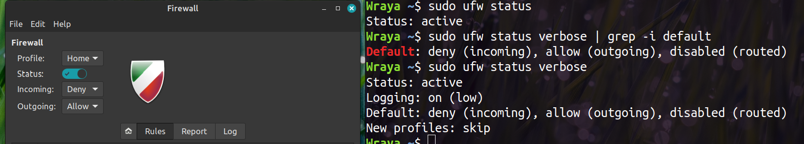
Lisätty ufw:llä sääntö, että shh
Salli kaikki http ja https liikenne
Http-liikenne kulkee yleensä portin 80 kautta ja https-liikenne portin 443 kautta, joten komennoilla sudo ufw allow 80 ja sudo ufw allow 80 saadaan sallittua kaikki http- ja https-liikenne. Toki portin sijaan olisi voinut käyttää myös suoraan vain protokollan nimeä. (https://linuxconfig.org/ubuntu-22-04-open-http-port-80-and-https-port-443-with-ufw)
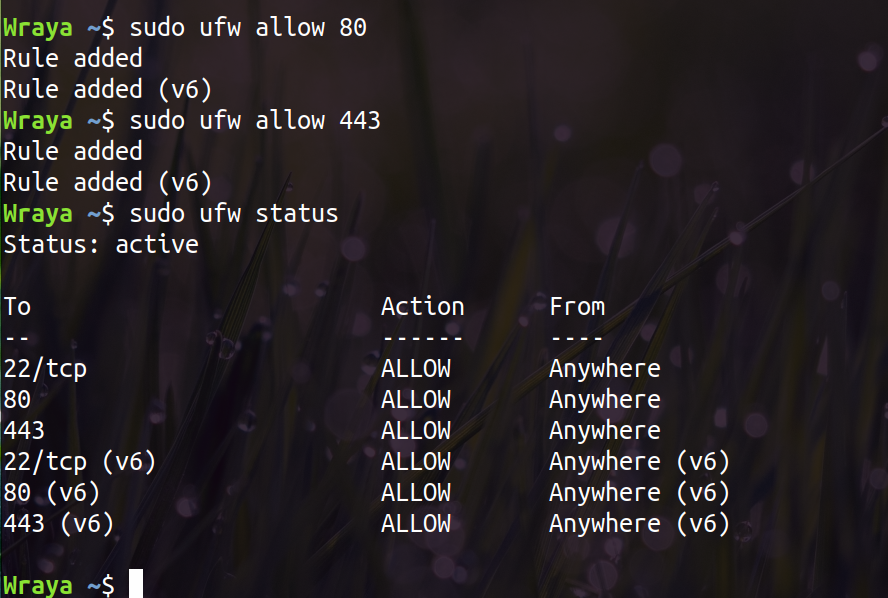
Kiellä kaikki saapuva ftp liikenne
Jos haluaa estää vain saapuvan FTP-liikenteen (portit 20 ja 21, ehkä jotain hämmentäviä passiivia portteja myös), niin sen voi määritellä komennoilla sudo ufw deny in 20/tcp ja sudo ufw deny in 20/tcp (https://ipcisco.com/ftp-and-ftp-ports/ ja https://askubuntu.com/questions/1121149/ubuntu-ftp-and-sftp-client-firewall-rules-for-ufw)
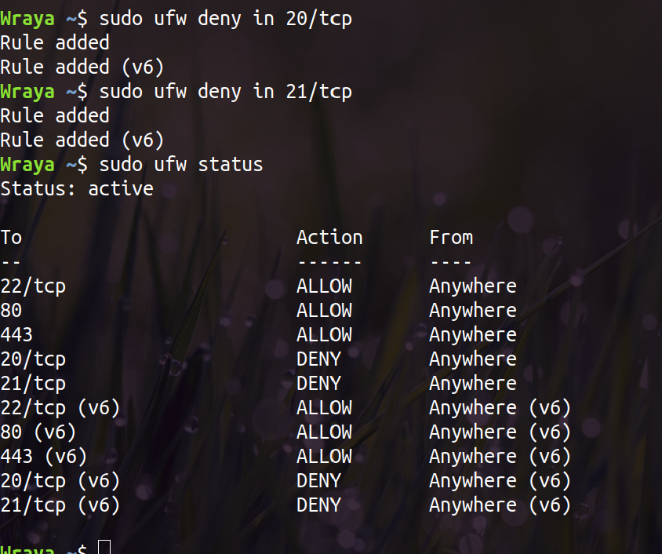
Kiellä kaikki ulospäin lähtevä liikenne porttiin 25
Portti 25 on aikaisemmin ollut SMTP-protokollan (Simple Mail Transfer Protocol) portti, mutta nykyään sen protokollan käyttämä portti pitäisi olla 587. Estetty kaikki ulospäin lähteävä liikenne koneelle porttiin 25. https://www.cloudflare.com/learning/email-security/smtp-port-25-587/
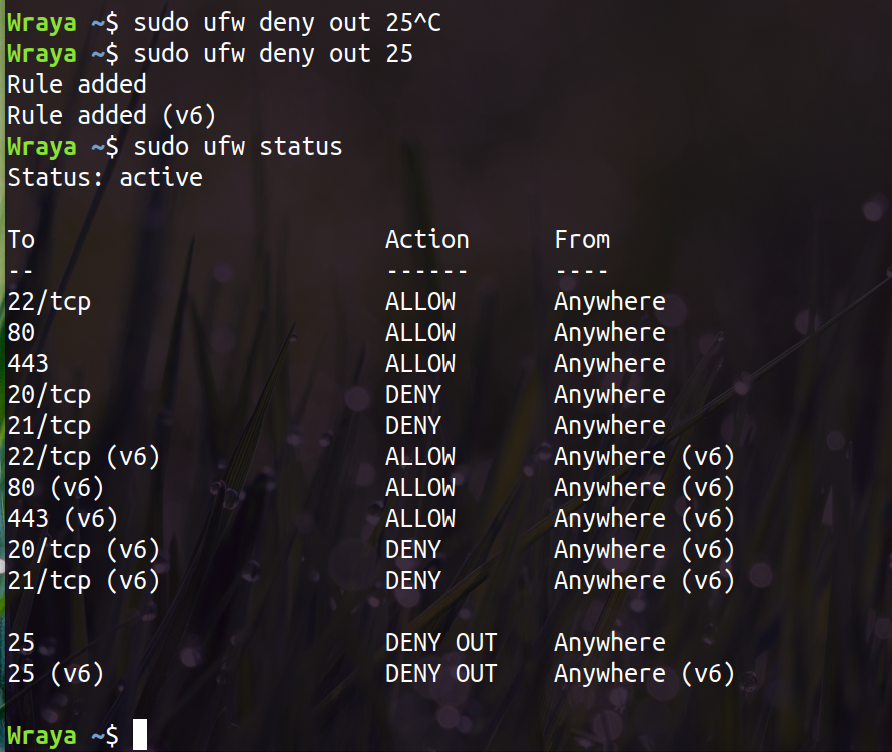
Kiellä kaikki liikenne IP-osoitteesta 15.15.15.51
Ilmeisesti haluan estaa kaiken liikenteen Hewlett-Packardin ip-osoitteeseen, ainakin IP-haun mukaan. Onneksi oma koneeni ei ole HP, niin tuskinpa kaipaan mitään tuosta ip:stä
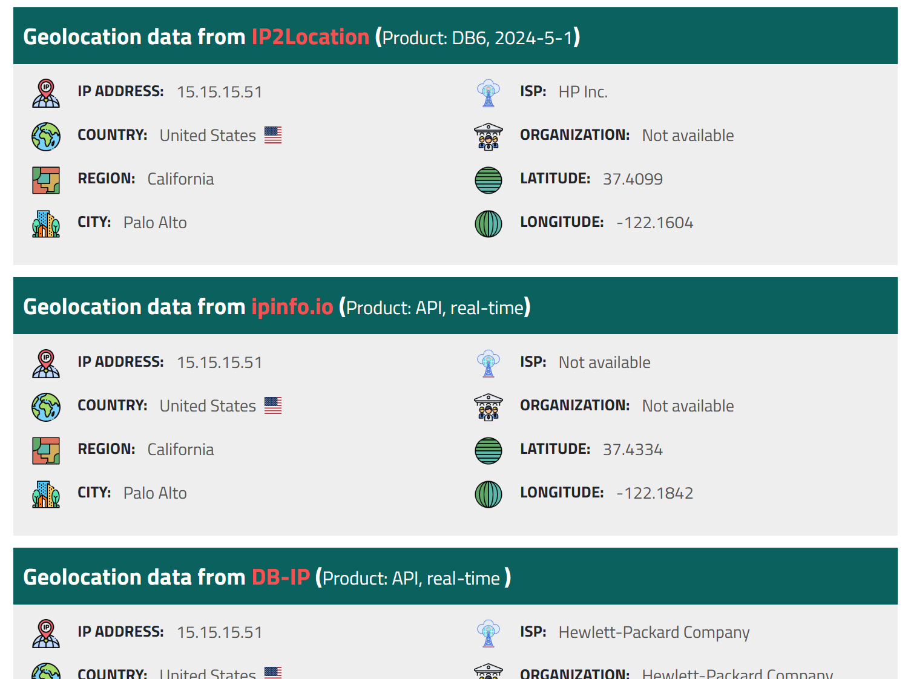
Estetty kaikki liikenne IP-osoitteesta 15.15.15.51 komennolla sudo ufw deny from 15.15.15.51
Asennettu clamAV ja clamAV daemon komennolla sudo apt install clamav clamav-daemon -y, sen jälkeen ensin lopetettu clamav-prosessi sudo systemcl stop clamav-freshclam ja päivitetty virusohjelma komennolla sudo freshclam.
Skannattu kaikki tiedostot komennolla clamscan -r /
Onneksi viruksia ei löytynyt! :)
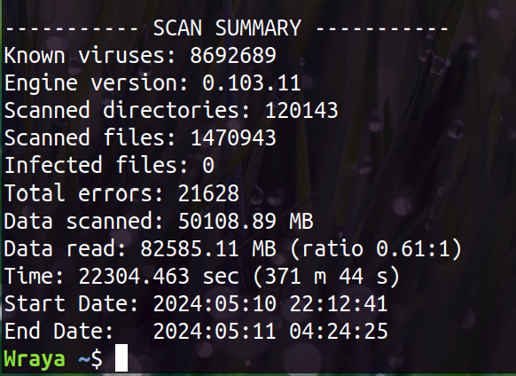
Päivistykset
Päivitetty manuaalisesti komennolla sudo apt-get update && sudo apt-get upgrade. Tosin mitään päivitettävää ei ollut...
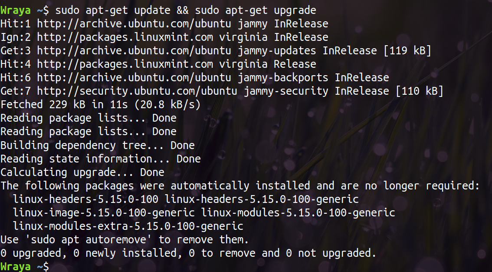
Palomuuri
Tehty edellisessä tehtävässä
Minimoi asennetut sovellukset
Tarkistettu komennolla dpkg -l, mitä asennettuja sovelluksia on.
Listaan tuli minulla yli 2500 tuhatta riviä, joten pitäisi varmaan tietää, mitä asennettua sovellusta etsii ja mitä sovelluksia haluaisi poistaa
Jos haluan poistaa asennetun palvelun, niin ettei se automaattisesti käynnisty, niin käyttäisin komentoa systemctl disable ja perään palvelun nimi. Ja jos haluaisin kokonaan poistaa sovelluksen, niin käyttäisin komentoa apt-get remove ja sovelluksen nimi
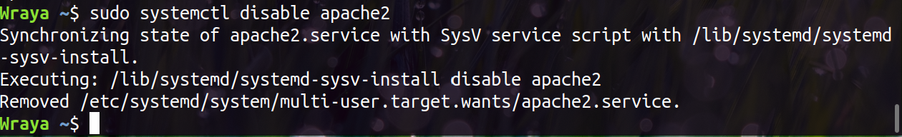
Salasanapolitiikan muokkaaminen
Määritelty salasanan vanhentumiseen liittyviä tietoja. Komennolla sudo nano /etc/login.defs avataan tiedosto, jonne päästään muuttamaan tietoja.
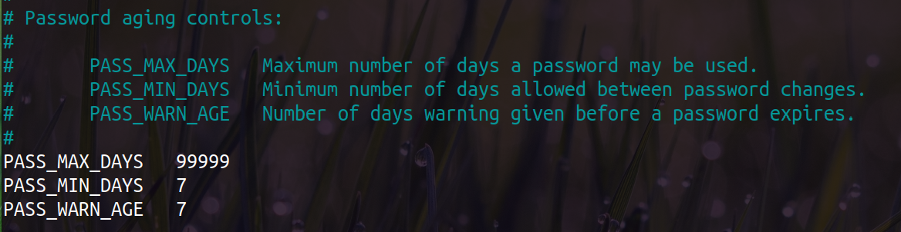
Asennettu libpam-pwquality paketti erilaisten salasana-linjausten määrittelemiseksi ja lisätty salasana-linjauksia.
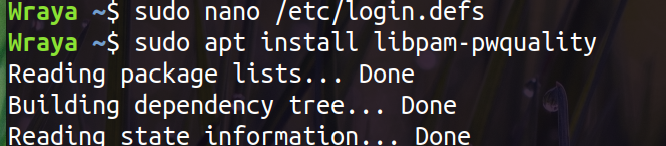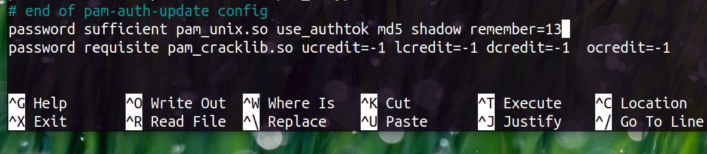
Turvattomien protokollien käytöstä poistaminen
Testattu turvattomien protokollien poistoa, mutta ei löytynyt, eikä mitään sitten poistettu.
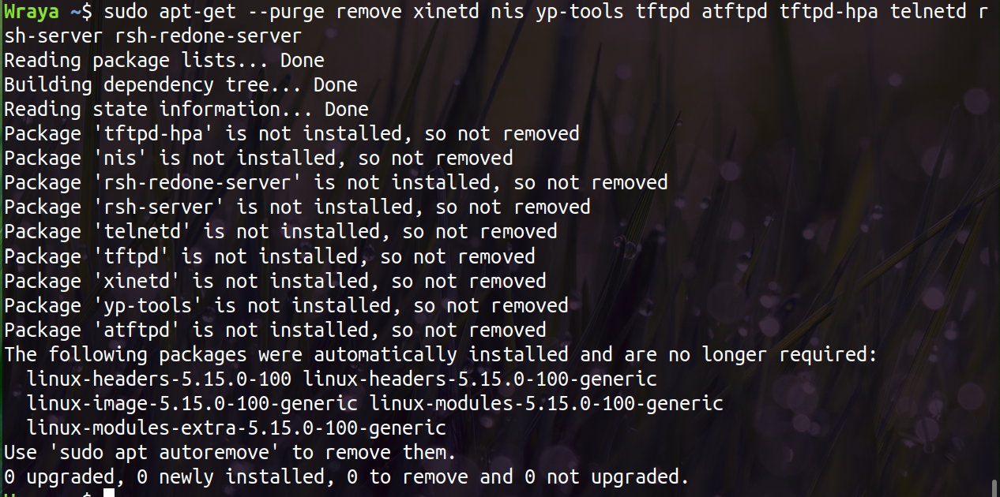
Lynis
Asennettu Lynis ja tehty auditointi. On ilmeisesti paljon ohjelmia, mitä voisi ladata ja ottaa käyttöön, esim. encryptfs-salaus on asennettu, mutta kenenkään käyttäjien kohdalla sitä ei ole otettu käyttöön.